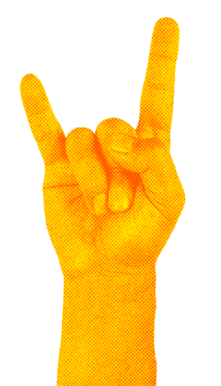
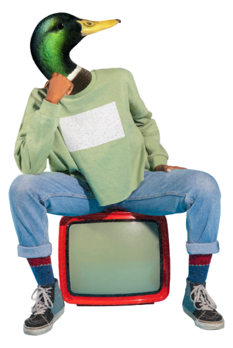

<div id="agradecimento">
  <h1>OBRIGADO!</h1>
  <p>Recebemos o seu contato e retornaremos o mais rápido possível!</p>
  <svg
    xmlns="http://www.w3.org/2000/svg"
    width="166"
    height="139"
    viewBox="0 0 166 139"
    fill="none"
  >
    <g filter="url(#filter0_d_377_1553)">
      <path
        d="M139.727 1.82844C138.165 0.266334 135.632 0.266337 134.07 1.82844L58.2014 77.697C56.6393 79.2591 54.1066 79.2591 52.5445 77.697L31.7607 56.9132C30.1986 55.3511 27.6659 55.3511 26.1038 56.9132L5.82843 77.1885C4.26633 78.7506 4.26633 81.2833 5.82842 82.8454L29.4407 106.458L52.7138 129.731C54.2759 131.293 56.8086 131.293 58.3707 129.731L81.4747 106.627L160.172 27.9303C161.734 26.3682 161.734 23.8355 160.172 22.2734L139.727 1.82844Z"
        fill="#00DD84"
      />
    </g>
    <defs>
      <filter
        id="filter0_d_377_1553"
        x="0.656738"
        y="0.657227"
        width="164.687"
        height="138.245"
        filterUnits="userSpaceOnUse"
        color-interpolation-filters="sRGB"
      >
        <feFlood flood-opacity="0" result="BackgroundImageFix" />
        <feColorMatrix
          in="SourceAlpha"
          type="matrix"
          values="0 0 0 0 0 0 0 0 0 0 0 0 0 0 0 0 0 0 127 0"
          result="hardAlpha"
        />
        <feOffset dy="4" />
        <feGaussianBlur stdDeviation="2" />
        <feComposite in2="hardAlpha" operator="out" />
        <feColorMatrix
          type="matrix"
          values="0 0 0 0 0 0 0 0 0 0 0 0 0 0 0 0 0 0 0.25 0"
        />
        <feBlend
          mode="normal"
          in2="BackgroundImageFix"
          result="effect1_dropShadow_377_1553"
        />
        <feBlend
          mode="normal"
          in="SourceGraphic"
          in2="effect1_dropShadow_377_1553"
          result="shape"
        />
      </filter>
    </defs>
  </svg>
  
</div>

<div class="puya-pato">
  
  
</div>
